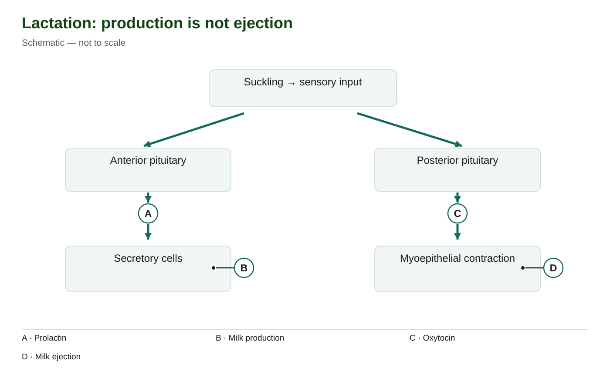
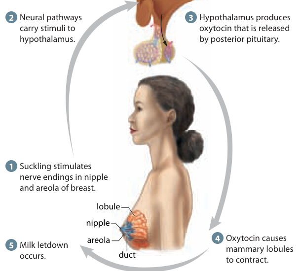

<section class="course-page" hidden="" id="lesson-10"><div class="p2-topic"><header class="page-header"><p class="eyebrow">Learn · Chapter 15</p><h1 data-canvas-edit-key="ch15-l10-title" data-canvas-helper-edit-key="ch15-l10-title">Lactation and hormonal control after birth</h1><p class="lesson-question">Why are producing milk and releasing milk different processes?</p><div class="goal-strip"><div><p class="section-label">Learning goal</p><p data-canvas-edit-key="ch15-l10-goal" data-canvas-helper-edit-key="ch15-l10-goal">Distinguish prolactin-driven milk production from oxytocin-driven milk ejection and connect both with suckling and post-birth hormone changes.</p></div><div><p class="section-label">Before you begin</p><p data-canvas-edit-key="ch15-l10-prior" data-canvas-helper-edit-key="ch15-l10-prior">Oxytocin is released by the posterior pituitary. A tissue can contain a product without releasing it immediately.</p></div></div><details class="page-guide"><summary><strong>How to complete this lesson</strong> Learn → worked example → practise → lesson check</summary><div class="guide-body"><ol><li>Read the explanation and its diagrams. Open a bold term when you need a definition.</li><li>Follow the worked example, then try both supported questions. Select <strong>Check answer</strong> for feedback.</li><li>Open the required check and select <strong>Start</strong>. Correct both selections to unlock writing.</li><li>Write each explanation and select its <strong>Save written response</strong> button. Editing saved writing makes it a draft again.</li><li>Select <strong>Submit and finish</strong> to complete the check. Find your records in <strong>All My Work</strong>.</li></ol><p><strong>Expected work:</strong> one completed lesson check. Supported practice, videos and textbook questions are optional. Saved writing is not automatically graded.</p></div></details><div class="textbook-band"><div><strong>Optional embedded reading</strong><p>Chapter 15 · printed pp. 525–526</p></div><p><a data-open-pdf="525" href="#textbook-library">Open p. 525</a> · <a data-open-pdf="526" href="#textbook-library">Open p. 526</a></p></div><p class="terms-line lesson-term-strip"><strong>Key terms:</strong> <button aria-haspopup="dialog" class="bio-term" data-term-id="ch15-word-lactation" type="button">lactation</button> · <button aria-haspopup="dialog" class="bio-term" data-term-id="ch15-word-prolactin" type="button">prolactin</button> · <button aria-haspopup="dialog" class="bio-term" data-term-id="ch15-word-milk-ejection" type="button">milk ejection</button> · <button aria-haspopup="dialog" class="bio-term" data-term-id="ch15-word-suckling-reflex" type="button">suckling reflex</button></p><details class="vocab-help lesson-vocabulary-help"><summary>Vocabulary help</summary><section aria-labelledby="lesson-10-anchor-words" class="lesson-words"><p class="section-label">Key terms</p><h2 id="lesson-10-anchor-words">Words for this lesson</h2><p>Use these definitions when you need help with a term.</p><dl><div><dt><button aria-haspopup="dialog" class="bio-term" data-term-id="ch15-word-lactation" type="button">lactation</button></dt><dd>Milk production and secretion by the mammary glands.</dd></div><div><dt><button aria-haspopup="dialog" class="bio-term" data-term-id="ch15-word-prolactin" type="button">prolactin</button></dt><dd>An anterior-pituitary hormone that stimulates milk production.</dd></div><div><dt><button aria-haspopup="dialog" class="bio-term" data-term-id="ch15-word-milk-ejection" type="button">milk ejection</button></dt><dd>Movement of milk toward the nipple through contraction of cells around mammary secretory structures.</dd></div><div><dt><button aria-haspopup="dialog" class="bio-term" data-term-id="ch15-word-suckling-reflex" type="button">suckling reflex</button></dt><dd>A neural and hormonal response initiated by sensory stimulation during feeding.</dd></div></dl></section></details></header><div class="content-section" data-canvas-edit-key="ch15-l10-teaching-01" data-canvas-helper-edit-key="ch15-l10-teaching-01" id="ch15-l10-teaching-01"><h3>Separate making milk from moving it</h3>
<p data-canvas-edit-key="ch15-l10-teaching-01-p1" data-canvas-helper-edit-key="ch15-l10-teaching-01-p1">Lactation includes milk production and secretion by mammary glands. Within these glands, small sacs called alveoli contain secretory cells that make milk. Milk can collect in the sacs and ducts before it moves toward the nipple. Making a substance and moving a substance already present are different jobs.</p>
<p data-canvas-edit-key="ch15-l10-teaching-01-p2" data-canvas-helper-edit-key="ch15-l10-teaching-01-p2"><button aria-haspopup="dialog" class="bio-term" data-term-id="ch15-word-prolactin" type="button">Prolactin</button> is released by the anterior pituitary and supports milk production by the secretory cells. <button aria-haspopup="dialog" class="bio-term" data-term-id="ch15-word-oxytocin" type="button">Oxytocin</button> is made in the hypothalamus and released by the posterior pituitary. It stimulates contraction of myoepithelial cells surrounding the secretory structures. Their contraction moves existing milk into ducts and toward the nipple: <button aria-haspopup="dialog" class="bio-term" data-term-id="ch15-word-milk-ejection" type="button">milk ejection</button>, also called let-down.</p>
<figure class="science-figure" data-figure-id="ch15-lactation"><div class="figure-toolbar"><strong>Lactation: production is not ejection</strong><button class="text-link" data-enlarge-figure="ch15-lactation" type="button">View larger</button></div><figcaption>Suckling can stimulate two hormonal responses: anterior-pituitary prolactin supports milk production, while posterior-pituitary oxytocin supports milk ejection. Schematic — not to scale.</figcaption></figure>
<p>Read the two branches separately. On the left, A is the prolactin signal; the secretory cells at B carry out milk production. On the right, C is the oxytocin signal; myoepithelial contraction at D produces milk ejection. B and D connect a tissue or mechanism with its function. They do not mean that a cell is itself a hormone or that contraction manufactures milk.</p>
<p>To explain a problem, first ask which job changes. If milk has already formed but is not being moved by contraction, the described change concerns ejection. That observation alone cannot establish that prolactin is absent.</p></div><div class="content-section" data-canvas-edit-key="ch15-l10-teaching-02" data-canvas-helper-edit-key="ch15-l10-teaching-02" id="ch15-l10-teaching-02"><h3>Connect the neural input with the hormonal responses</h3>
<p data-canvas-edit-key="ch15-l10-teaching-02-p1" data-canvas-helper-edit-key="ch15-l10-teaching-02-p1">Suckling stimulates sensory receptors in the nipple and surrounding areola. Nerve impulses carry information to the hypothalamus. This central control influences pituitary hormone release: prolactin supports production, while oxytocin supports movement of available milk. The overview above compresses the control step; the branches do not mean sensory nerves release hormones directly into the breast.</p>
<p data-canvas-edit-key="ch15-l10-teaching-02-p2" data-canvas-helper-edit-key="ch15-l10-teaching-02-p2">The nervous and endocrine systems use different routes in this response. The initial information travels along neurons toward the central nervous system. Hormones then travel in blood from their release sites to responsive mammary tissues. Milk follows a third route, through mammary ducts toward the nipple; it does not travel along nerves or return to the brain.</p>
<figure class="science-figure" data-figure-id="ch15-source-lactation"><div class="figure-toolbar"><strong>Neural and hormonal control of milk ejection</strong><button class="text-link" data-enlarge-figure="ch15-source-lactation" type="button">View larger</button></div><figcaption>Sensory input during suckling stimulates oxytocin release from the posterior pituitary. Myoepithelial contraction ejects milk; prolactin supports its production. Inquiry into Biology, Chapter 15, p. 526.</figcaption></figure>
<p>Use the numbered source figure to trace the <strong>oxytocin/ejection branch</strong>: nipple stimulation at 1, neural signalling at 2, hypothalamus and posterior pituitary at 3, contraction around milk-containing structures at 4 and let-down at 5. Its five steps do not separately draw prolactin-driven production. Keep that distinction when comparing the two figures.</p>
<p data-canvas-edit-key="ch15-l10-teaching-02-p3" data-canvas-helper-edit-key="ch15-l10-teaching-02-p3">Continued suckling helps sustain hormonal responses, and other neural inputs can influence them. When suckling ends, this particular sensory input decreases. Milk supply also has local regulation and depends on milk removal, so the simple pathway is not a prediction of an individual's milk quantity or an exact time when production stops.</p></div><div class="content-section" data-canvas-edit-key="ch15-l10-teaching-03" data-canvas-helper-edit-key="ch15-l10-teaching-03" id="ch15-l10-teaching-03"><h3>Explain what placental delivery changes</h3>
<p data-canvas-edit-key="ch15-l10-teaching-03-p1" data-canvas-helper-edit-key="ch15-l10-teaching-03-p1">During pregnancy, estrogen and <button aria-haspopup="dialog" class="bio-term" data-term-id="ch15-word-progesterone" type="button">progesterone</button> help prepare mammary tissues. Their high concentrations also limit copious milk secretion despite the presence of prolactin. After placental delivery, these placental hormone concentrations fall. Reduced restraint allows prolactin-supported milk secretion to increase.</p>
<p data-canvas-edit-key="ch15-l10-teaching-03-p2" data-canvas-helper-edit-key="ch15-l10-teaching-03-p2">The important change is the hormonal context, not the first appearance of prolactin. Prolactin is already secreted during pregnancy. The statement on textbook p. 526 that secretion begins only after birth is incorrect; measurements in pregnant people show prolactin throughout pregnancy. Distinguish limited copious secretion from an absolute absence of any milk: small amounts of early milk, called colostrum, can be present before birth.</p>
<p data-canvas-edit-key="ch15-l10-teaching-03-p3" data-canvas-helper-edit-key="ch15-l10-teaching-03-p3">Thus, “prolactin is present” and “copious milk is being secreted” are not equivalent observations. Hormone action depends on the target tissue and the other signals acting on it. This course model explains the roles of named hormones; it cannot diagnose a person's feeding experience from a single observation.</p></div><div class="worked-example" data-canvas-edit-key="ch15-l10-worked" data-canvas-helper-edit-key="ch15-l10-worked" id="ch15-l10-worked"><h3>Worked example</h3><h4>Locate a changed function without overclaiming</h4>
<p><strong>Given:</strong> In a model mammary gland, secretory cells have made milk. Sensory input reaches the central nervous system, but the cells around the milk-containing sacs do not contract. <strong>Question:</strong> Which process is directly affected, and what can you infer about the hormones?</p>
<ol><li><strong>Use the evidence already given:</strong> milk is present because production has occurred. Do not replace that observation with an assumption that all milk production failed.</li><li><strong>Identify the missing mechanism:</strong> contraction around the sacs normally moves milk toward the ducts. The directly affected process is ejection.</li><li><strong>Name the usual signal and route:</strong> oxytocin released by the posterior pituitary travels in blood and stimulates these contractile cells.</li><li><strong>Keep the inference bounded:</strong> the information does not say whether the problem is oxytocin release, its delivery or the cells' response. It also does not establish that prolactin is absent.</li></ol>
<p><strong>Check with a changed condition:</strong> If no milk had been made despite effective contraction, simply increasing movement would not replace the missing production. That would direct attention to production and its supporting signals, including anterior-pituitary prolactin. In both cases, name the affected function before proposing a signal.</p></div><section class="content-section guided-practice" data-canvas-edit-key="ch15-l10-guided" data-canvas-helper-edit-key="ch15-l10-guided" id="ch15-l10-guided"><h2>Practise with support</h2><h3>Apply the explanation</h3><p>Try both questions. Use the hint to revise your thinking after an incorrect answer.</p><div class="practice-question" data-guided-item="ch15-l10-guided-q1"><label for="ch15-l10-guided-q1">Which hormone mainly supports milk production?</label><select id="ch15-l10-guided-q1"><option value="">Choose an answer</option><option value="Prolactin">Prolactin</option><option value="hCG">hCG</option><option value="Oxytocin">Oxytocin</option></select><div class="actions"><button data-guided-check="" type="button">Check answer</button></div><p aria-live="polite" data-revision-feedback="" role="status"></p></div><div class="practice-question" data-guided-item="ch15-l10-guided-q2"><label for="ch15-l10-guided-q2">Which signal initially carries information from suckling toward the central nervous system?</label><select id="ch15-l10-guided-q2"><option value="">Choose an answer</option><option value="Milk in a duct">Milk in a duct</option><option value="Sensory nerve impulses">Sensory nerve impulses</option><option value="A chromosome travelling through blood">A chromosome travelling through blood</option></select><div class="actions"><button data-guided-check="" type="button">Check answer</button></div><p aria-live="polite" data-revision-feedback="" role="status"></p></div></section><div class="stop-check"><p class="section-label">Stop and think</p><h2>Try this before opening the explanation</h2><p>Could milk ejection be impaired even when milk has been produced?</p><details><summary>Show the explanation</summary><p>Yes. Production and ejection have distinct mechanisms.</p></details></div><details class="activity-disclosure"><summary>Open required check · Lactation and hormonal control after birth</summary><section class="activity" data-check-id="ch15-check-10" data-required-check=""><h2>Explain what you have learned</h2><p class="required-note">This check counts toward chapter progress. Correct the 2 selections to unlock 2 written explanations. Saving writing records your response; it does not grade its accuracy.</p><div class="run-head"><div class="actions"><button data-start-check="" type="button">Start</button><button data-redo-check="" hidden="" type="button">Redo this check</button></div><span class="timer" data-check-timer="">Not started</span></div><p aria-live="polite" class="run-status" data-check-status=""></p><fieldset data-check-body="" disabled=""><legend class="sr-only">Required chapter check</legend><div class="check-question" data-check-question="ch15-l10-check-mc-1"><p class="eyebrow">Selection 1</p><h3 data-canvas-edit-key="ch15-l10-check-mc-1-prompt" data-canvas-helper-edit-key="ch15-l10-check-mc-1-prompt" id="ch15-l10-check-mc-1-prompt">Which pairing is correct?</h3><fieldset aria-labelledby="ch15-l10-check-mc-1-prompt"><label class="choice-row"><input data-check-choice="ch15-l10-check-mc-1" name="ch15-l10-check-mc-1" type="radio" value="Oxytocin—ovary—DNA replication"/><span>Oxytocin—ovary—DNA replication</span></label><label class="choice-row"><input data-check-choice="ch15-l10-check-mc-1" name="ch15-l10-check-mc-1" type="radio" value="hCG—mammary gland—cervical dilation"/><span>hCG—mammary gland—cervical dilation</span></label><label class="choice-row"><input data-check-choice="ch15-l10-check-mc-1" name="ch15-l10-check-mc-1" type="radio" value="Prolactin—anterior pituitary—milk production"/><span>Prolactin—anterior pituitary—milk production</span></label><label class="choice-row"><input data-check-choice="ch15-l10-check-mc-1" name="ch15-l10-check-mc-1" type="radio" value="Prolactin—posterior pituitary—fertilization"/><span>Prolactin—posterior pituitary—fertilization</span></label></fieldset><button data-check-answer="ch15-l10-check-mc-1" type="button">Check answer</button><p aria-live="polite" class="inline-feedback" data-feedback=""></p></div><div class="check-question" data-check-question="ch15-l10-check-mc-2"><p class="eyebrow">Selection 2</p><h3 data-canvas-edit-key="ch15-l10-check-mc-2-prompt" data-canvas-helper-edit-key="ch15-l10-check-mc-2-prompt" id="ch15-l10-check-mc-2-prompt">Why does placental delivery help permit increased milk secretion?</h3><fieldset aria-labelledby="ch15-l10-check-mc-2-prompt"><label class="choice-row"><input data-check-choice="ch15-l10-check-mc-2" name="ch15-l10-check-mc-2" type="radio" value="Milk becomes a hormone that suppresses the hypothalamus"/><span>Milk becomes a hormone that suppresses the hypothalamus</span></label><label class="choice-row"><input data-check-choice="ch15-l10-check-mc-2" name="ch15-l10-check-mc-2" type="radio" value="All prolactin is removed from the blood"/><span>All prolactin is removed from the blood</span></label><label class="choice-row"><input data-check-choice="ch15-l10-check-mc-2" name="ch15-l10-check-mc-2" type="radio" value="The ovary releases a new acrosome"/><span>The ovary releases a new acrosome</span></label><label class="choice-row"><input data-check-choice="ch15-l10-check-mc-2" name="ch15-l10-check-mc-2" type="radio" value="Estrogen and progesterone concentrations fall, changing their restraint on secretion"/><span>Estrogen and progesterone concentrations fall, changing their restraint on secretion</span></label></fieldset><button data-check-answer="ch15-l10-check-mc-2" type="button">Check answer</button><p aria-live="polite" class="inline-feedback" data-feedback=""></p></div><p class="unlock-message" data-unlock-message="">Answer the selections correctly to unlock the writing.</p><fieldset data-writing-gate="" disabled=""><legend class="sr-only">Written explanations</legend><div class="writing-question" data-writing-question="ch15-l10-check-writing-1"><p class="eyebrow">Written explanation 1</p><label data-canvas-edit-key="ch15-l10-check-writing-1-prompt" data-canvas-helper-edit-key="ch15-l10-check-writing-1-prompt" for="ch15-l10-check-writing-1">Compare prolactin and oxytocin using their pituitary release sites and actions in lactation.</label><textarea aria-describedby="ch15-l10-check-writing-1-status" data-check-writing="ch15-l10-check-writing-1" data-limit="3200" id="ch15-l10-check-writing-1" rows="6"></textarea><p class="writing-status">Maximum 3200 characters. Explain the biology in your own words.</p><button data-save-writing="ch15-l10-check-writing-1" type="button">Save written response</button><p aria-live="polite" class="writing-status" data-writing-status="" id="ch15-l10-check-writing-1-status"></p><details data-locked="true"><summary>Compare after saving your own response</summary><p>Prolactin is released by the anterior pituitary and supports milk production. Oxytocin is released by the posterior pituitary and causes contraction around mammary secretory structures, helping eject milk. Producing milk and moving existing milk are different actions.</p><div class="answer-criteria"><strong>Check your explanation for:</strong><ul><li>Identifies the relevant structures or quantities.</li><li>Explains the causal relationship or calculation, not just the final result.</li><li>Uses the stated evidence and avoids a stronger conclusion than it supports.</li></ul></div></details></div><div class="writing-question" data-writing-question="ch15-l10-check-writing-2"><p class="eyebrow">Written explanation 2</p><label data-canvas-edit-key="ch15-l10-check-writing-2-prompt" data-canvas-helper-edit-key="ch15-l10-check-writing-2-prompt" for="ch15-l10-check-writing-2">Explain how the suckling response integrates nervous and endocrine signalling.</label><textarea aria-describedby="ch15-l10-check-writing-2-status" data-check-writing="ch15-l10-check-writing-2" data-limit="3200" id="ch15-l10-check-writing-2" rows="6"></textarea><p class="writing-status">Maximum 3200 characters. Explain the biology in your own words.</p><button data-save-writing="ch15-l10-check-writing-2" type="button">Save written response</button><p aria-live="polite" class="writing-status" data-writing-status="" id="ch15-l10-check-writing-2-status"></p><details data-locked="true"><summary>Compare after saving your own response</summary><p>Sensory receptors respond to suckling and send neural information to the hypothalamus. Central control influences hormone release, including prolactin and oxytocin. These hormones travel in blood to mammary tissues, where they support production and ejection.</p><div class="answer-criteria"><strong>Check your explanation for:</strong><ul><li>Identifies the relevant structures or quantities.</li><li>Explains the causal relationship or calculation, not just the final result.</li><li>Uses the stated evidence and avoids a stronger conclusion than it supports.</li></ul></div></details></div></fieldset><div class="actions"><button data-finish-check="" type="button">Submit and finish</button></div></fieldset></section></details><nav aria-label="Previous and next topics" class="lesson-footer"><a href="#lesson-09">← Labour and birth as positive feedback</a><a class="next" href="#lesson-11">Next: Reproductive technologies and informed decisions →</a></nav><div class="content-section textbook-practice-lesson-link"><a data-textbook-topic="lesson-10" href="#textbook-practice">Optional textbook practice for Lactation and hormonal control after birth</a></div></div></section>